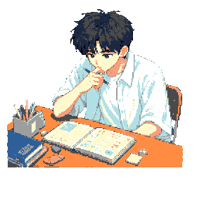

함께할 멤버 1 / 6
학교로!
TAB 탭/연타/꾹 · ◀ ▶ 좌우 · 화면 스와이프
키보드: Space / ↑ 액션 · ← → 좌우
TWS 픽셀 컷씬
TWS Fan Game · 「첫 만남은 계획대로 되지 않아」 모티프
초고속 마이크로게임 · 하트 3개
화면 지시대로 빠르게 1동작! 하트 3개를 지켜라.
오늘의 완벽한 계획

GAME OVER
SCORE
0
최고 콤보 0
ACT 1